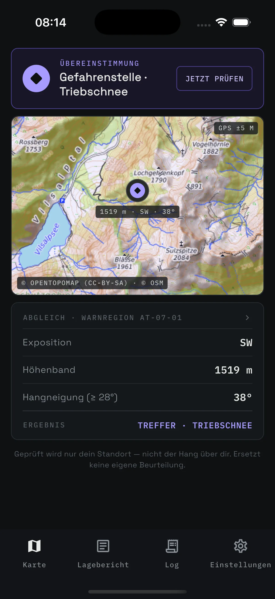
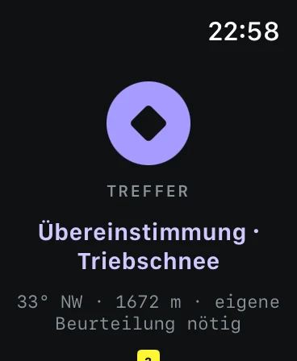
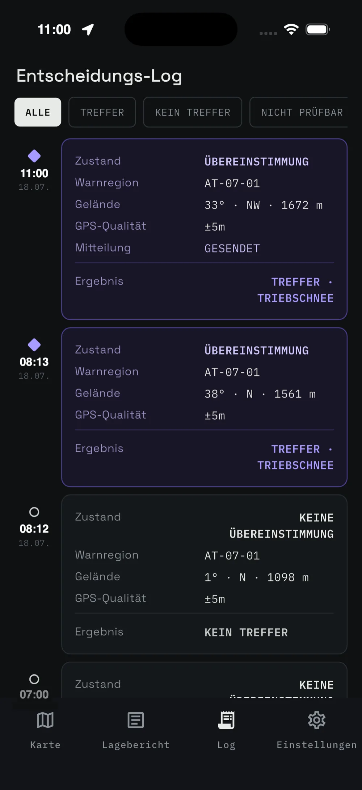
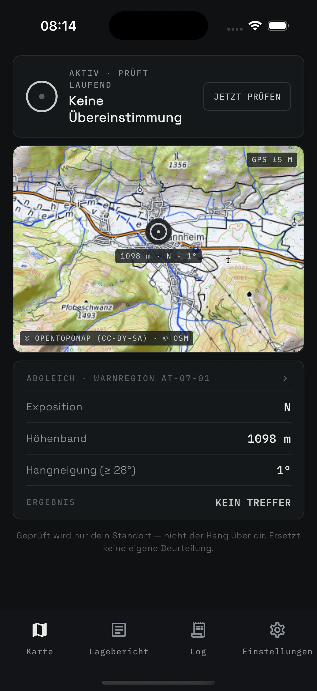

HangKontext misst Exposition, Höhe und Hangneigung an deinem Standort und gleicht sie laufend mit den Gefahrenstellen des amtlichen Lawinenlageberichts ab. Fakten statt Bewertung — informativ, nie als Freigabe.

Jeder Zustand hat eine eigene Form — fehlen Daten, sagt die App das explizit. Tippe die Zustände durch:
Treffer nur, wenn alle drei Messwerte derselben Gefahrenstelle des Lageberichts entsprechen. Stell deinen Standort selbst ein:
Handschuhe an, Telefon in der Jacke — der Abgleich läuft sichtbar weiter.

Steilgelände, das zu den Gefahrenstellen des aktuellen Lageberichts passt, liegt violett auf der Karte. Das Overlay ist Opt-in.

Das Entscheidungs-Log hält fest, was die App wann angezeigt hat — zum Nachbesprechen der Tour oder für die Ausbildung.
Einladung per TestFlight vor Saisonstart. iOS zuerst — mit Android trägst du dich auf die Warteliste ein.

TestFlight-Einladung vor Saisonstart. iOS zuerst, Android auf der Warteliste.